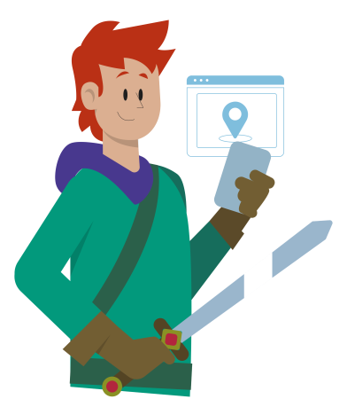

ConectaTech
As Estações Tech são centros descentralizados de capacitação em inovação tecnológica, pensados para promover a inclusão digital para a comunidade maranhense. Eles oferecem atividades formativas para todas as faixas etárias, utilizando uma infraestrutura focada no conhecimento tecnológico. Quer entender mais sobre as Estações Tech e ter acesso a inclusão tecnológica? Realize seu cadastro.
